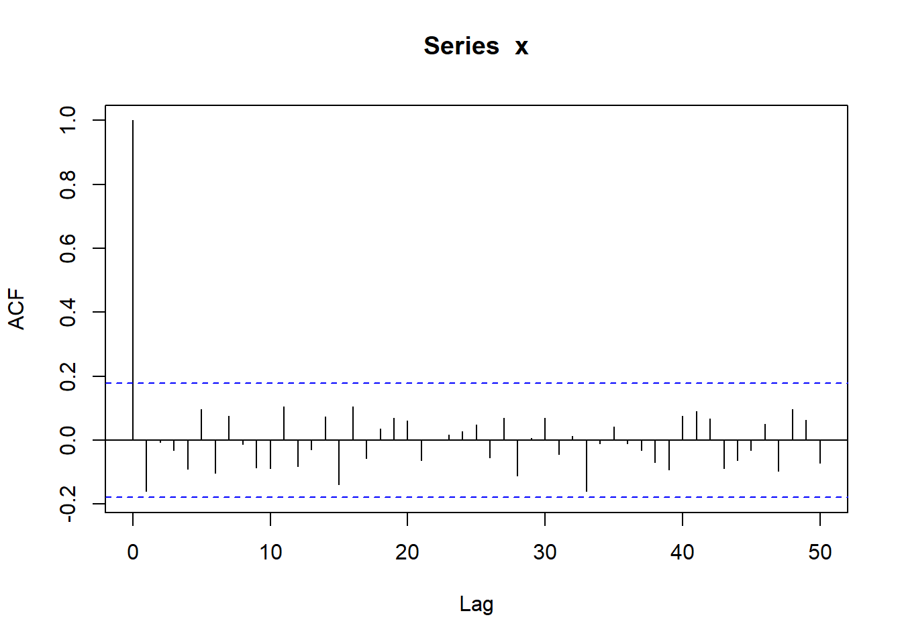
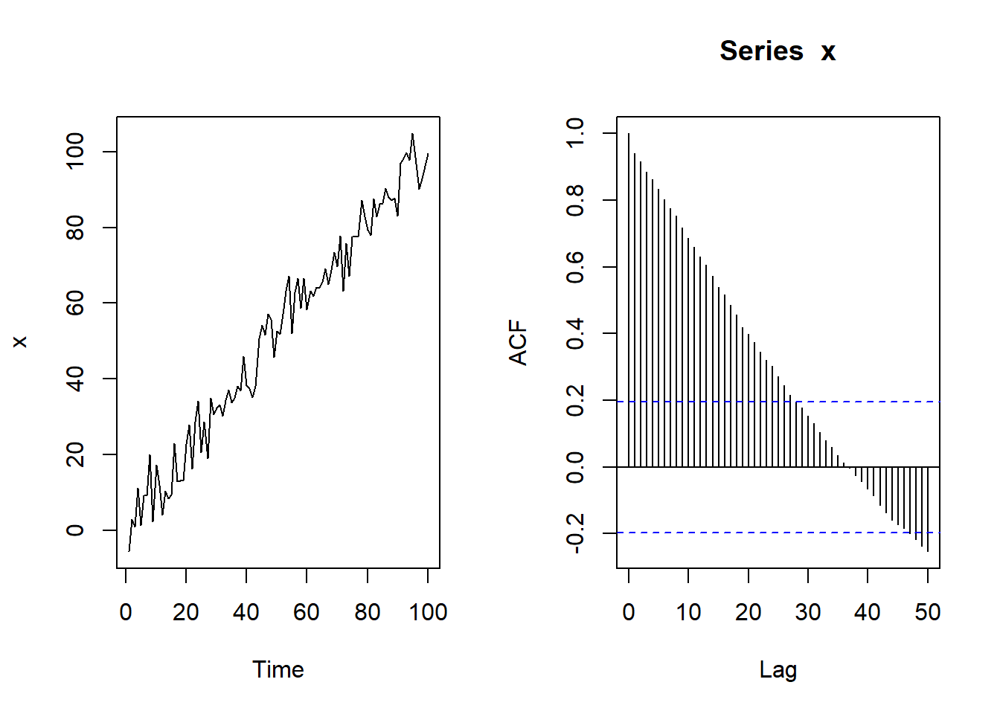
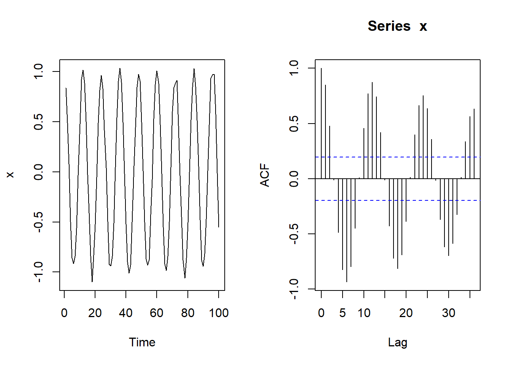
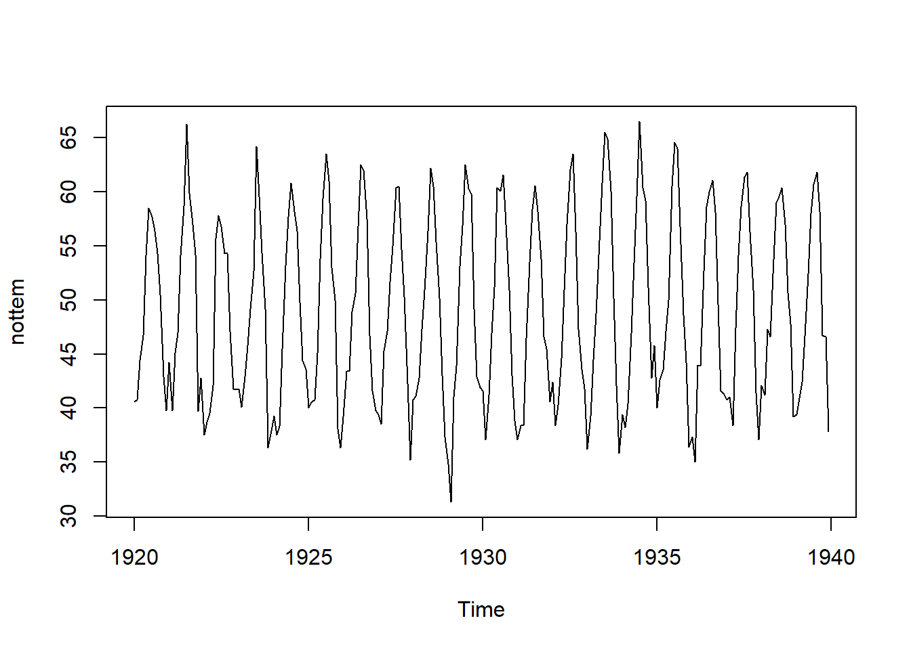
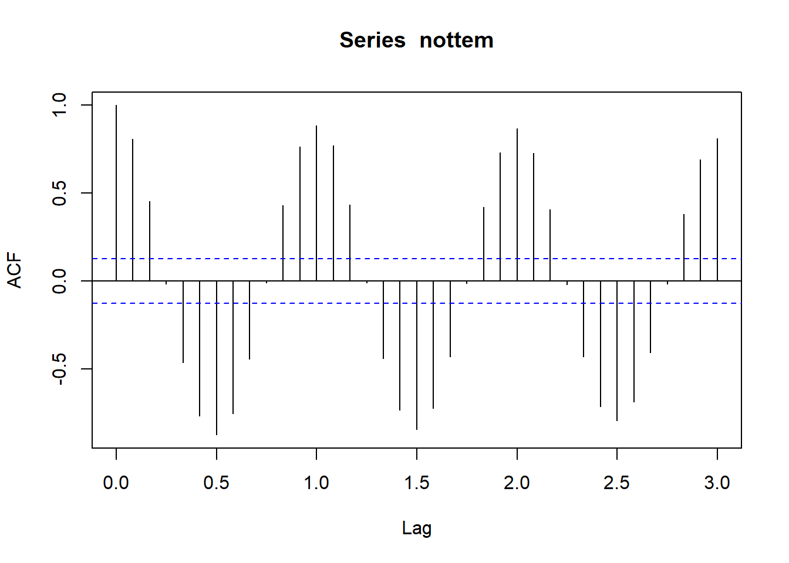

plot(co2)3 Sinal e ruído
3.1 Sinal e ruído
Em geral, a série temporal possui componentes de dois tipos: sinal e ruído. O primeiro é uma função do tempo geralmente relacionado com a média da série em dado instante de tempo, enquanto que o segundo está relacionado com a variância. Podemos assumir que essa relação é aditiva:
\[X_t=\hbox{sinal}(t)+\varepsilon_t\] onde \(\varepsilon_t\) é o ruído.
Em alguns casos essa relação é multiplicativa, ou seja,
\[X_t=\exp\{\hbox{sinal}(t)+\varepsilon_t\},\] e, nesses casos, aplicamos o logaritmo na série para que as componentes se tornem aditivas.
Os sinais mais importantes são:
Tendência: um comportamento de subida ou descida que pode ser observado no médio/longo prazo. Uma série temporal com tendência costuma ser bem representada por polinômios, ou seja \[x_t= \sum_{j=0}^q\beta_j t^j +\varepsilon_t.\]
Sazonalidade: é um padrão de oscilação que ocorre em um período fixo e conhecido. Cheias de rios e quantidade de chuva são exemplos de padrões sazonais. Em termos gerais, o padrão sazonal pode ser representado por um harmônico, ou seja,
\[x_t=A\cos\left(\phi+\frac{2\pi}{p}t\right)+\varepsilon_t\] onde \(p\) é o período sazonal, \(A\) é amplitude da onda e \(\phi\) a fase.
- Ciclos: é um padrão oscilatório sem período fixo, como o ciclo de recessão de uma economia. Modelar ciclos é um pouco mais complexo, mas veremos posteriormente que é possível escrever séries deste tipo como \[x_t=A_t\cos\left(\phi_t+2\pi\lambda t\right)+\varepsilon_t,\] onde a amplitude e a fase variam no tempo e o período \(1/\lambda\) é desconhecido.
Os padrões oscilatórios (sazonalidade e ciclos) descritos acima variam em torno de zero. Caso seja necessário, um parâmetro \(\mu\) constante pode ser adicionado para caracterizar uma oscilação em torno de uma média.
É possível que uma série possua todos os sinais acima, sendo escrita como
\[x_t=\sum_{j=0}^q \beta_j t^j+A\cos\left(\phi+2\pi\lambda t\right)+A_t\cos\left(\phi_t+2\pi\lambda t\right)+\varepsilon_t\]
O ruído é a parte aleatória da composição e possui média zero. Isso implica que, para uma série com sinal \(f(t)\), teremos
\[E(x_t)=E(f(t))+E(\varepsilon_t)=f(t)\] e \[Var(x_t)=Var(f(t)+\varepsilon_t)=Var(\varepsilon_t)\] Os ruídos mais importantes são:
Ruído branco: como ja definido, é um processo estacionário com variância constante e não correlacionado, ou seja \(Cov(\varepsilon_t,\varepsilon_s)=0\) para todo \(t\neq s\).
Média móvel de ordem \(q\): sejam \(\ldots,\varepsilon_{-2},\varepsilon_{-1},\varepsilon_{0},\varepsilon_{1},\ldots\) ruídos brancos. O ruído de média móvel de ordem \(q\) é dado por \[\eta_t=\varepsilon_{t}+\sum_{j=1}^q \theta_j\varepsilon_{t-j}.\]
A série a seguir representa uma série mensal de concentração de \(\hbox{CO}_2\) na atmosfera em Mauna Loa, expressa em partes por milhão. Note o comportamento da tendência e da sazonalidade.
Existem diversas ferramentas que estimam a tendência e a sazonalidade. Dentre estas, detaca-se o STL, por sua robustez. Abaixo, ilustramos a decomposição da série co2. O termo remainder, também conhecido como resíduo, é calculado como
\[e_t=x_t-\hat{f}(t),\] onde \(\hat{f}(t)\) é o sinal (tendência+sazonalidade) ajustado. Se não houver qualquer outro sinal a ser ajustado, então \(e_t\) é uma estimativa para \(\varepsilon_t\).
# p é o período do padrão sazonal
p = 12
plot(stl(co2,p))Exercício. Considere a série AirPassengers, disponível no pacote datasets.
Faça um gráfico da série temporal e procure determinar suas componentes.
A função
decomposeestima a sazonalidade assumindo a média das observações correspodentes ao mesmo fator sazonal (por exemplo, todos os janeiros). Faça um gráfico do resultado dodecomposepara esta série e discuta os resultados (em especial o termorandom, que é o resíduo da decomposição).Repita o item 2, mas utilizando a função
stl. Quais são as principais diferenças?Aplique o logaritmo da série e verifique o seu gráfico. Quais são as semelhanças e diferenças deste gráfico com o obtido no item 1?
Exercício. Na série abaixo temos a taxa de desemprego mensal no Brasil entre março de 2002 e dezembro de 2015. Analise as componentes desta série.
url <- 'https://www.dropbox.com/s/rmgymzsic99qawd/desemprego.csv?dl=1'
banco <- read.csv(url, sep = ';', h = F)3.2 A função de aucorrelação para diferentes sinais
Quando a amostra é aleatória, a função de autocorrelação é nula para qualquer defasagem diferente de 0. Deste modo, o correlograma deve apresentar valores próximos de zero.
Para entender o que próximo de zero significa, o limites do intervalo de confiança para o coeficiente de correlação sobre a hipótese de que esta é nula são colocados no gráfico.
Abaixo ilustramos um correlograma para uma amostra de variáveis aleatórias independentes com distribuição normal padrão.
x <- rnorm(120)
# correlograma
acf(x)
# o mesmo correlograma com uma defasagem maior
acf(x, lag = 50)
Considere que a série exibe tendência. Isso implica que a relação entre \(x_t\) e \(x_{t+h}\) é aproximadamente linear na vizinhança de \(t\), ou seja
\[x_{t+h}\approx x_t+hb+\varepsilon_{t}\] Isso implica em \(Corr(x_t,x_{t+h})\approx 1\). Por ser um comportamento de médio/longo prazo, é esperado que \(\rho(h)\) decaia lentamente para zero. Considere, por exemplo, a série
\[x_t= t + \varepsilon_t,\] onde \(\varepsilon_t\sim\hbox{Normal}(0,5^2)\). Abaixo simulamos essa série e apresentamos o respectivo correlograma
x <- rnorm(100, 1:100, 5)
oo <- par( mfrow=c(1,2))
ts.plot(x)
acf(x, lag = 50)
par(oo)Observe as similaridades do correlograma acima com o observado para a série de homicídios em Manaus, vista anteriormente.
O sinal sazonal é caracterizado por um comportamento periódico, geralmente modelado pela função harmônica:
\[\hbox{sinal}(t)=A\cos\left(\frac{2\pi}{p}t + \phi\right)\]
Vamos estudar a função harmônica com mais detalhes em outro momento. Por hora, note que
\[\begin{align} x_{t+h}&=A\cos\left(\frac{2\pi}{p}(t+h) + \phi\right)+\varepsilon_{t+h}=A\cos\left(\frac{2\pi}{p}t+ \frac{2\pi}{p}h+ \phi\right)+\varepsilon_{t+h}\\ &=A\cos\left(\frac{2\pi}{p}t+\phi\right)\cos\left( \frac{2\pi}{p}h\right)-A\sin\left(\frac{2\pi}{p}t+\phi\right)\sin\left( \frac{2\pi}{p}h\right)+\varepsilon_{t+h}\\ &=\left[A\cos\left(\frac{2\pi}{p}t+\phi\right)\pm\varepsilon_t\right]\cos\left( \frac{2\pi}{p}h\right)-A\sin\left(\frac{2\pi}{p}t+\phi\right)\sin\left( \frac{2\pi}{p}h\right)+\varepsilon_{t+h}\\ &=\underbrace{\cos\left( \frac{2\pi}{p}h\right)}_{A(h)}x_t-\underbrace{A\sin\left(\frac{2\pi}{p}t+\phi\right)\sin\left( \frac{2\pi}{p}h\right)}_{B(h)}+\underbrace{\varepsilon_{t+h}-A\cos\left( \frac{2\pi}{p}h\right)\varepsilon_t}_{\varepsilon_{t+h}^\star} \end{align}\] ou seja, \[x_{t+h}\approx A(h)x_t+B(h)+\varepsilon_{t+h}^\star,\] e \(x_{t+h}\) e \(x_t\) são correlacionados quando \(A(h)\neq 0\). Como \(|A(h)|\) oscila entre 0 e 1, a função e autocorrelação deve ter um comportamento de onda, atingindo seu máximo em \(h=p,2p,3p,\ldots\). Observe a série simulada abaixo, com um período \(p=12\)
set.seed(123)
oo <- par( mfrow = c(1,2))
for(i in 1:100) x[i] <- cos(2*pi*i/12) + rnorm(1,0,.05)
ts.plot(x)
acf(x, lag = 36)
par(oo)Compare esse correlograma com a série mensal de temperaturas no castelo de Nottingham
plot(nottem)
acf(nottem, lag = 36)
3.3 Exercícios
Exercício 1 Estude o comportamento da série ldeaths, que conta o número mensal de óbitos por doenças pulmonares no Reino Unido.
Exercício 2 Estude o comportamento da série do número de óbitos maternos mensais.
Exercício 3 Em 2017, um epidemiologista estava interessado na série de suicídios no Mato Grosso do Sul. O banco de dados utilizado é dado a seguir. Construa uma série mensal e estude seu comportamento
url <- 'https://drive.google.com/uc?authuser=0&id=1DMSgrQDl0636Lw0Y0MYJHJrgw_2uXntM&export=download'